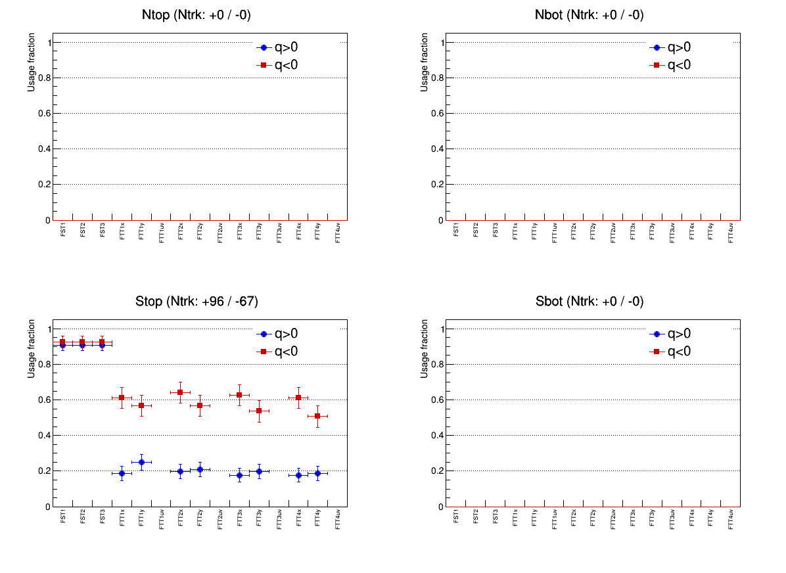
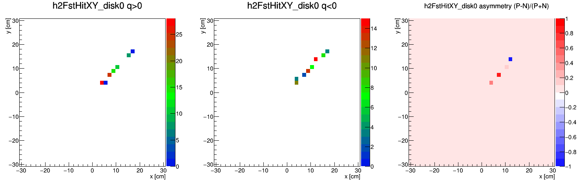
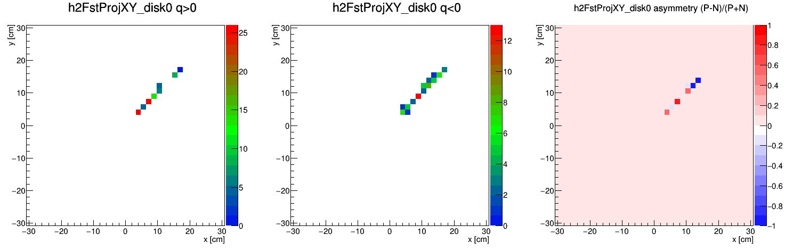
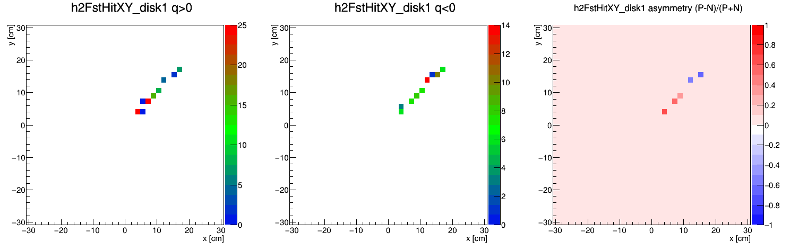
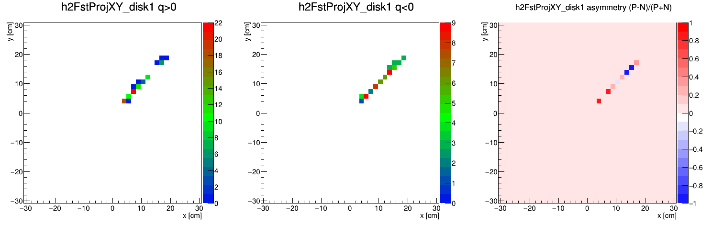
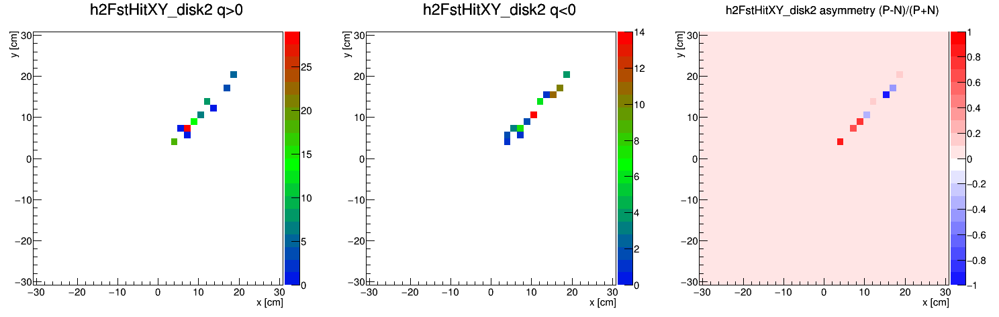
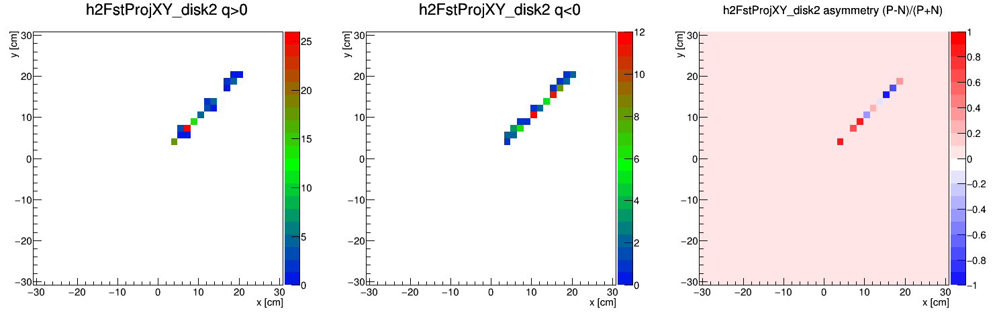
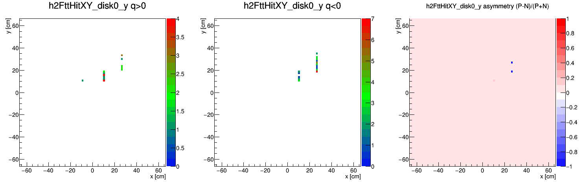
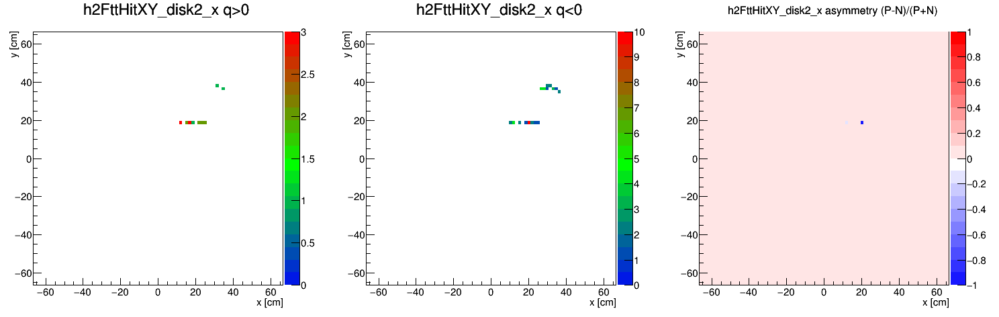
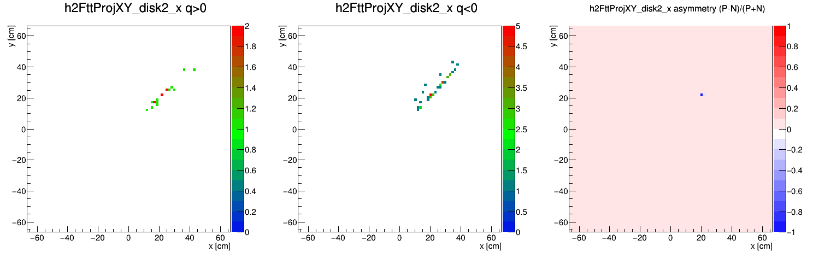

A new maker that lets a GEANT MC event drive the FTT reconstruction code path
G2THIT → StFttSimHitMaker → StFttClusterMaker → StFttClusterPointMaker which uses StFttDb
instead of the fast-sim shortcuts that bypass them entirely.
Directly motivated by the single-electron gun @ 45° page: that page set out to test the FTT geometry transform with a controlled, known-kinematics single track, and found that no MC-compatible code path in this repo actually reaches StFttDb :
bool reverseHardwareMap( int &rob, int &feb, int &vmm, int &ch,
int plane, int quad, int row, int strip,
UChar_t &orientation ) const; // orientation: in as hint, out as result
| Level | Values | Notes |
|---|---|---|
| disk (plane) | 0-3 | increasing z, ~312/330/347/365cm |
| quadrant (quad) | 0=A, 1=B, 2=C, 3=D | D | A (top row), C | B (bottom row). A is the sign reference (sx=sy=+1); B flips y; C flips x and y; D flips x. |
| foil (chamber) | front / back | front = "vertical chamber" (Vertical + DiagonalV strips); back = "horizontal chamber" (Horizontal + DiagonalH strips). Same quadrant, same footprint, two physical foils. |
| row 0-2 | X/Y strips | 3 bands along the row axis, start edges 11.49 / 172.29 / 360.09mm (YX_StripGroupEdge), strip pitch 3.2mm. |
| row 3-4 | diagonal (U/V) strips | NOT a 4th/5th spatial band -- same footprint as rows 0-2, on the same foil. row 3 vs 4 is just the sign of (y-x) in local coordinates (which side of the strip's own long axis). |
| orientation | 0=Horizontal, 1=Vertical, 2=DiagonalH, 3=DiagonalV | Horizontal/Vertical ↔ row 0-2; DiagonalH/DiagonalV ↔ row 3-4, on the back/front foil respectively. |
Schematic, not to scale, plane-0 offsets. Row bands drawn to scale-ish for A/D/B/C (colored dots = each quadrant's own local origin -- they do NOT coincide with each other or with the beampipe); U/V hatching (direction only) and row0/1/2 labels drawn once, in A, for clarity -- the same layout repeats in B, C, D.
Diagonal strips exist to resolve H×V crossing ambiguity (confirmed via a reverted commit's StFwdFttClusterQAMaker.cxx, which cross-checks H/V/D candidates), not to cover a gap X/Y misses. One bug found+fixed along the way: MakeLocalPoints() uses opposite row↔sign conventions for DiagonalV vs DiagonalH -- using the same rule for both silently picks a real-but-wrong hardware channel.
Ran a 5-event electron-gun sample (pT=1.5GeV, η=2.5-4.0, random φ).
For X/Y clusters, the measured axis reproduces GEANT truth to ~1mm end-to-end through the
real transform -- well within one strip pitch (3.2mm), checked by hand for several
quadrants/orientations. For diagonal clusters, the rotation mixes a precise coordinate
(from the strip index) with an approximate
Built the full chain electron-gun @ 45° asked for but found not actually possible at the time that page was written: FST fast-sim + this maker's real FTT chain + GenFit StFwdTrackMaker + StFwdResidualMaker (copied unmodified from this repo into ~/fcstrk12, which didn't have it), inserted right before fwdTrack so GenFit sees real StFttPoints built through the actual StFttDb transform. Generator: single e-, pT=1.5GeV, η=2.5-4.0, φ=45°±0.001rad (top-south quadrant A, where sx=sy=+1 so the still-open scale-then-shift bug doesn't bite).
200 events → 163 converged Global tracks, 447 FST + 465 FTT residuals. FST residuals are unbiased (mean <0.01cm on all 3 disks). FTT residuals show a small but very consistent systematic offset on every plane -- dx: -0.29 to -0.34cm, dy: -0.37 to -0.45cm, all 4 planes, both axes, same sign, with 52-62 entries each (nowhere near statistical-fluctuation territory). This is new -- not yet explained. Working hypothesis: each StFttPoint's "other axis" is a coarse row-center placeholder, not a real measurement (see maxStripLength fix above) -- even with a real, bounded value and a large sigma, GenFit's Kalman fit still assigns it nonzero weight, and if that placeholder is consistently offset from the true trajectory in the same direction across several planes of the same track, it could pull the whole fit by a few mm -- which would then show up as a small residual even on the OTHER point's precise axis once the fit is projected back, despite that axis's own hit position being accurate in isolation (as validated above, without any fitting involved). Not confirmed; a plausible next step, not done here.
Same format as the electron-gun @ 45° page and the quadrant × charge page: each panel is Pos(q>0) | Neg(q<0) | asymmetry, from script/plotFwdResidualQuadCharge.C run unmodified against this run's StFwdResidualMaker output. Single e- sample, so Neg dominates (Pos is pair-production secondaries only) and only the Stop (South-top, quadrant A) quadrant is populated -- both expected. Click any thumbnail for the full-size image.
| Plot | hit-position | projection |
| Usage Fraction |  | |
| FST disk 0 |  |
 |
| FST disk 1 |  |
 |
| FST disk 2 |  |
 |
| FTT disk 0 (x) | ||
| FTT disk 0 (y) |  |
|
| FTT disk 1 (x) | ||
| FTT disk 1 (y) | ||
| FTT disk 2 (x) |  |
 |
| FTT disk 2 (y) | ||
| FTT disk 3 (x) | ||
| FTT disk 3 (y) | ||
{kind=link}
{kind=link}
{kind=link}
{kind=link}
{kind=link}
{kind=link}
{kind=link}
{kind=link}
{kind=link}
{kind=link}
{kind=link}
{kind=link}
{kind=link}
{kind=link}
{kind=link}
{kind=link}
{kind=link}
{kind=link}
{kind=link}
{kind=link}
{kind=link}
{kind=link}
{kind=link}